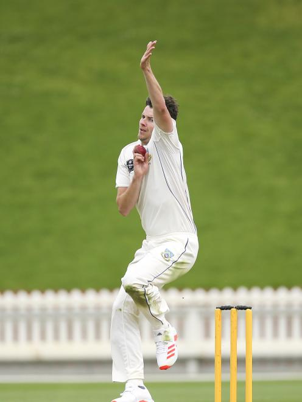

Jacob Duffy

Jacob Duffy is one of the fastest bowlers in New Zealand; He can deliver many variations including his deadly yorker
Mitchell Johnson
Mitchell Johnson delievers extreme bouncers against the English in the Ashes (test cricket game between Austrailia and England) as well as yorkers that sent stumps flying
Mitchell Starc
Mitchell Starc personally is the exact replica of Mitchell Johnson with the same bowling action (Johnson has a delayed action) but hes very consistant and effiecent with yorkers, being a key player during the 2025 Ashes
Varun Chakaravarthy
Varun Chakaravarthy is a mystery leg-break spinner along with his seven variations to trick experienced batters